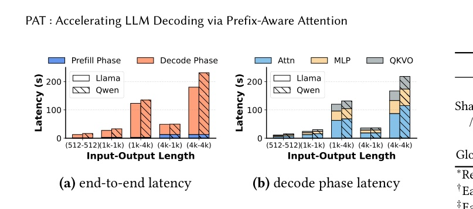
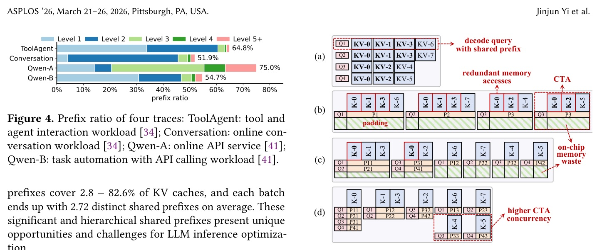
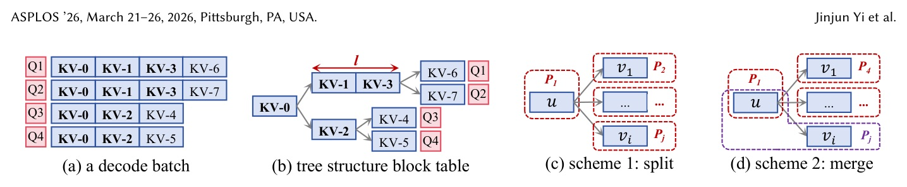
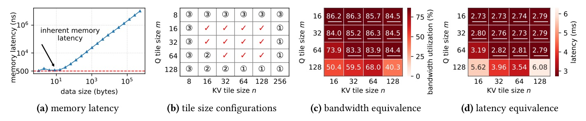
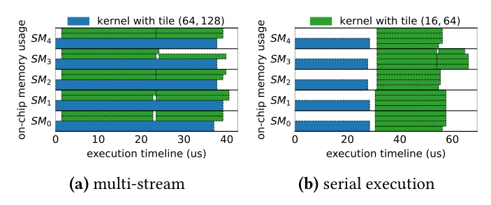
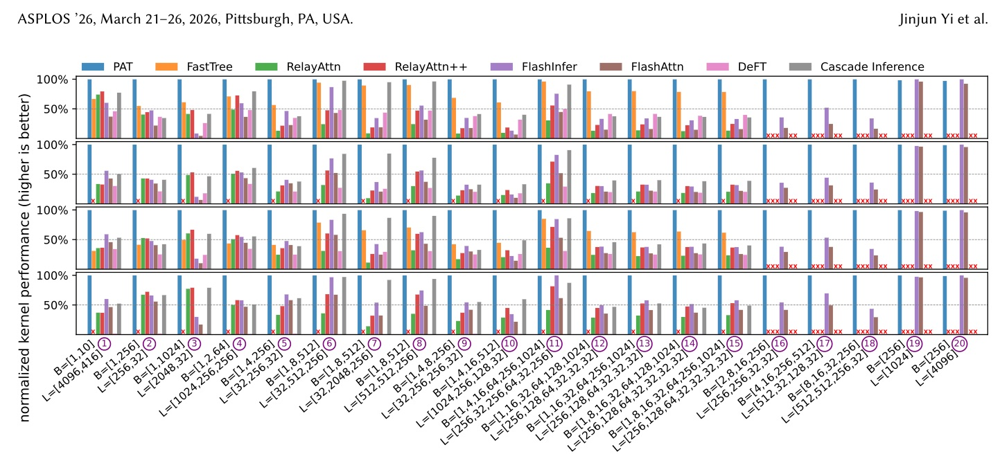
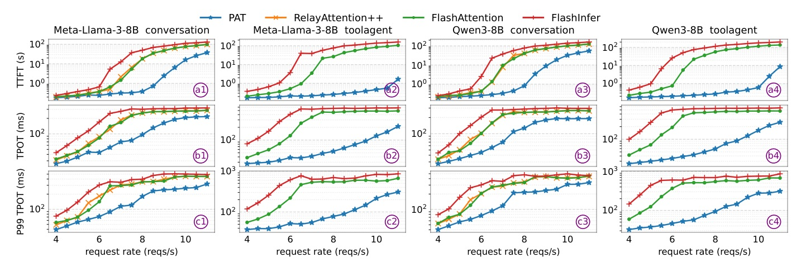

論文：PAT: Accelerating LLM Decoding via Prefix-Aware Attention with Resource Efficient Multi-Tile Kernel · ASPLOS '26（Pittsburgh, 2026-03）DOI 10.1145/3779212.3790200 · arXiv 2511.22333 · 程式碼 github.com/flashserve/PAT
回溯說明：今日 arXiv 清單的頂會 accepted 論文皆非計算加速主題，改選此篇已發表於 ASPLOS'26 的 decode attention kernel · Reviewer 資料：ASPLOS 無公開審稿
Decode attention 卡在 HBM 頻寬；真實流量有 52–75% 的 KV 來自共享 prefix，但 FlashAttention 這類 kernel 每個 query 各讀一次。PAT 把共享 prefix 的 query 打包進同一個 CTA、配合依 CTA 動態選 tile 的 kernel，attention 延遲平均降 53.5%，TPOT 降 17.0–93.1%。

| 層級 | 共用範圍 | 容量 | 延遲 | 頻寬 |
|---|---|---|---|---|
| Register | Thread | 256KB/SM | ~2 ns | ~20 TB/s |
| Shared Mem / L1 | CTA | 192KB/SM | ~20 ns | ~19 TB/s |
| L2 Cache | 所有 SM | 40MB | ~140 ns | ~2 TB/s |
| Global (HBM) | 所有 SM | 80GB | ~200 ns | ~2 TB/s |
CTA（thread block）是排到 SM 上的執行單位；FlashAttention 沿 seq 切 K/V tile，算一塊時非同步預取下一塊。每個 CTA 最多定址 163KB shared memory。

FastTree 雖有兩種 m，仍不足以應付高度動態的 query 數與 KV 長度（§3.3 註 1）。
Pack：依共享 prefix 把 query 收進同一 CTA，KV 在 shared memory 共用
Forward：依 CTA 形狀選 tile 的資源最佳化 kernel，輸出 partial result
Merge：online softmax 合併


| 維度 | 規則 | 理由 |
|---|---|---|
| Q tile m | 取可行集合中 ≥ q 的最小 m（q=20 → m=32） | 不把 query 切成兩個 CTA（避免重讀共享 KV）；不選 64/128 以留 smem 給 n |
| KV tile n · 長 KV | 選大 n | 每 CTA 佔更多 on-chip → 每 SM 併發 C 降 → 每 CTA 頻寬升、尾端 bubble 縮 |
| KV tile n · 短 KV | 選小 n | KV 192、n=128 時最後一個 tile 約 50% 是 compute bubble；n=64 可消除 |
離線依 KV 長度 sweep 各候選 n，編成 piecewise decision tree；線上每 CTA 常數時間查表。


| Baseline | 類型 | 最高加速 | 平均延遲降幅 |
|---|---|---|---|
| FlashAttention | query-centric | 21.5× | 67.8% |
| FlashInfer | query-centric | 11.7× | 52.1% |
| FastTree | KV-centric | 3.2× | PAT 快 3.8–68.9% |
| RelayAttention | KV-centric | 11.9× | — |
| RelayAttention++ | KV-centric + L2 | 5.7× | 仍慢 1.7× |
| DeFT | KV-centric | — | 76.6% |
| Cascade Inference | KV-centric | — | 41.2% |

| 變體 | 拿掉什麼 | Attention 延遲 (µs) | 相對 PAT |
|---|---|---|---|
| PAT | — | 286.68 | — |
| PAT-compute | 改用 FastTree 的計算量 cost model | 300.47 | +4.6% |
| PAT-naive | 每個節點直接打成一個 CTA | 320.05 | +10.4% |
| PAT-fixed | 固定 tile (64,128) | 398.47 | +39% |
| PAT-serial | 關掉 multi-stream | 300.58 | +4.8% |
PAT-compute / PAT-naive 的 global memory 讀寫量分別多 10.9% / 16.7%；消融工作負載的 CTA query 數 1–64、KV 長度 32–4096。
正面趨勢：V100 → B200 的 compute/bandwidth 比由 139 升到 312 FLOP/Byte，memory-centric 設計越來越值錢（§9）。
此頁為編者推論，與論文內容分開標示。
Existing systems implement prefix KV cache reuse, which reduces memory footprint ... However, it can not reduce global memory accesses, which is the bottleneck for decode attention.
既有系統實作了 prefix KV cache 重用以降低記憶體占用……但它無法減少 global memory 存取，而那正是 decode attention 的瓶頸。§1, p.2
Scheme 2 is preferred when 4si > lu. When the shared prefix at u is short and the specific child node vi's queries are large enough, merging them achieves higher profit by eliminating unnecessary intermediate results.
當 4si > lu 時選 Scheme 2：父節點共享 prefix 短、而子節點 query 夠多時，合併可消除不必要的中間結果而獲得更高收益。§5.1, p.6
In the absence of prefixes and bubbles, varying the tile configuration within the feasible set does not change CTA performance.
在沒有 prefix 與 bubble 的情況下，於可行集合內改變 tile 設定不會改變 CTA 效能。§5.2, p.8
來源：arXiv 2511.22333 · ASPLOS '26 · github.com/flashserve/PAT